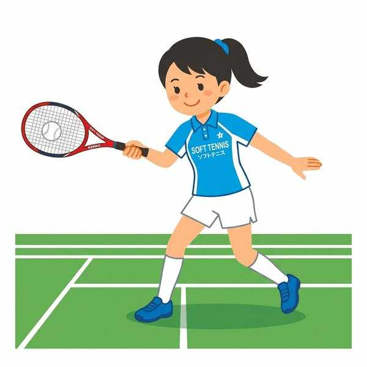
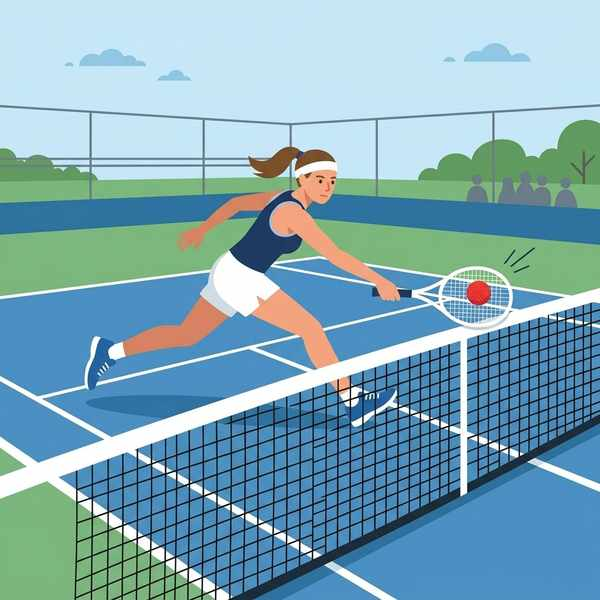
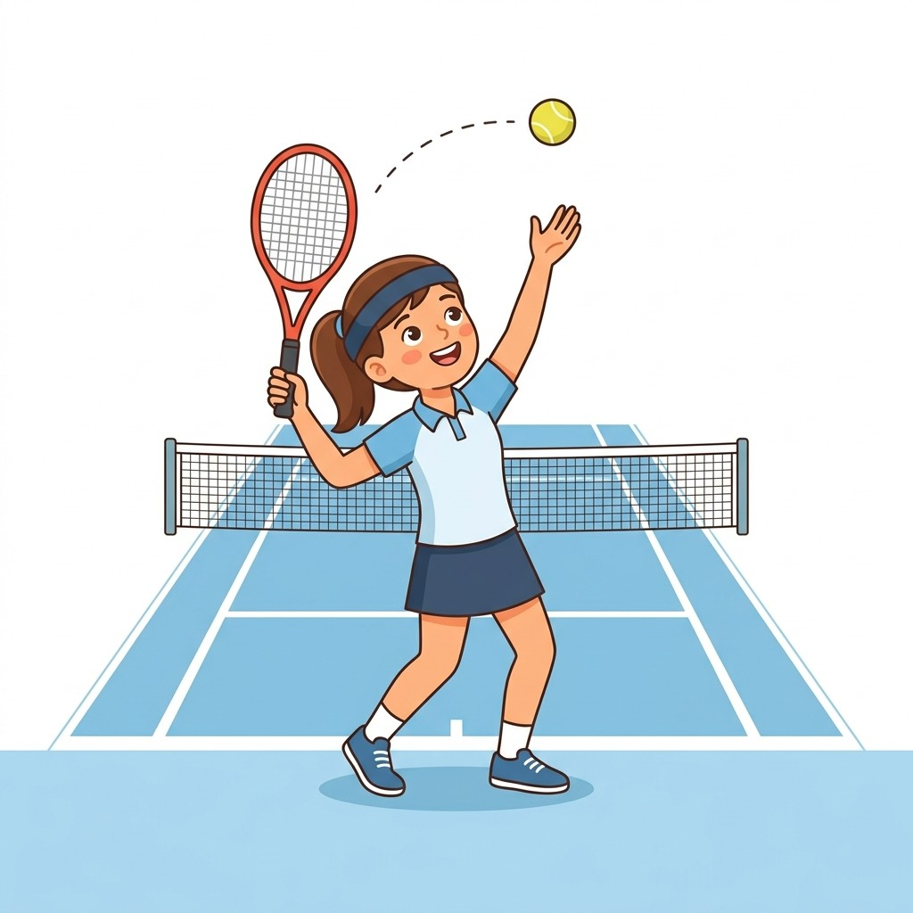
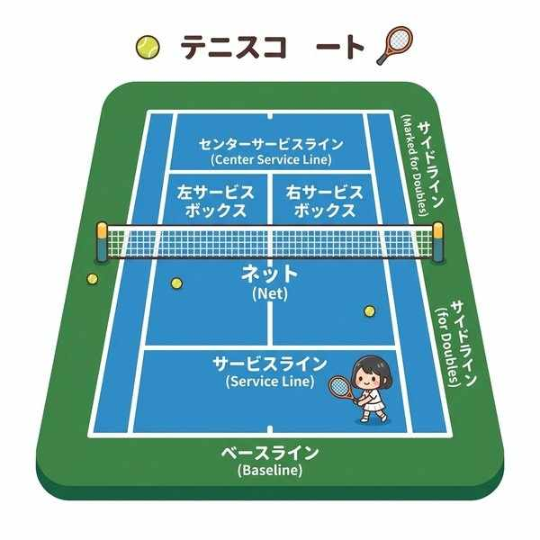

中学保健体育（体育実技）
単元17: ソフトテニス
ソフトテニス（軟式テニス）は、日本で生まれたゴム製のボールを使用するネット型の競技です。ここでは、ラケットの持ち方（グリップ）、ダブルスにおける前衛・後衛の役割、さまざまなショットの名称、そしてゲームカウントの数え方について解説します。
1. 用具とラケットの握り方

軟式テニスラケットでのストロークの基本
- ボールの特徴：硬式テニスと異なり、ゴム製で柔らかく、専用のポンプで空気を調節して使用します。
- ウエスタングリップ：ラケットを地面に平らに置き、真上からそのまま握る基本的な握り方。手のひらがラケットの面と平行になるため、ラケットの同じ面でフォアハンドもバックハンドも打ちやすいのが特徴です。
2. ダブルスにおける役割の違い

前衛のボレー
中学ソフトテニスではダブルス（2対2）が中心です。選手は役割に応じて得意なショットを磨きます。
- 後衛（こうえい / ベースライナー）：主にコートの後方（ベースライン付近）に位置します。グラウンドストローク（ワンバウンドした打球）でラリーを粘り強くつなぎ、チャンスボールを作る役割。
- 前衛（ぜんえい / ネットプレイヤー）：主にネットの近くに位置します。ボレーやスマッシュなどの空中戦で相手のボールを遮断し、積極的に得点を狙う役割。
3. さまざまな打法・ショットの名称

トスを上げて相手対角エリアへ打つサービス
テストで穴埋めになりやすい、ショットの専門用語の定義です。
| 打法名 | 具体的な打球の打ち方・特徴 | 定期テストのポイント |
|---|---|---|
| グラウンドストローク | 相手が打ってきたボールが、コート内にワンバウンドした後に打ち返す基本的な打法。 | 後衛の最も基本的な技術です。 |
| ボレー | ボールが地面にバウンドする前に、空中で直接打ち返す技術。 | ネット際で行い、前衛の必須技術です。 |
| スマッシュ | 高く上がったボールを、頭の上から全力で相手コートに叩き込む強力な攻撃ショット。 | チャンスボールを決定づけるショット。 |
| ロブ（ロビング） | 相手の前衛の頭上を越え、後方に届くように、意図的にボールを高くふんわりと打ち上げるショット。 | ラリーの体勢を立て直す際にも使われます。 |
| カットサーブ | ボールを打つ際、ラケット面を斜めにして擦ることで、ボールに強烈な回転（カット）をかけ、弾まないようにするソフトテニス独自のサーブ。 | レシーブしづらく、アンダーハンド等で打たれます。 |
- フォアハンドとバックハンド：ラケットを持つ手と同じ側で打つのがフォアハンド、逆側に来たボールを手の甲を前に向けて打つのがバックハンドです。
- フットワーク：ボールに素早く追いつき、バランス良く打つための「足の運び」のこと。
4. コートのラインと得点ルール

コートの各ラインと規格
- ネットの高さ：コートの中央の高さは1.06mです。
- ラインの名前：
- ベースライン：コートの一番後ろの境界線。
- サービスライン：コート中央にある、サーブを入れる区域（サービスコート）の後ろの境界線。
- デュース（Deuce）：1ゲームの中で、お互いのポイントが「3対3」（3ポイントオール）になった状態。ここからは2ポイント連取した方がゲームを獲得します。
🔥 定期テスト対策・暗記のコツ
① ラケットの握り方「ウエスタン」
「地面に置いたラケットを上からそのまま握る ➔ ウエスタングリップ」。硬式テニスで一般的な「イースタングリップ（握手するように握る）」との違いが問われます。
② ボレー・スマッシュ・ロブの区別
「ノーバウンドで返す ➔ ボレー」、「頭上から打ち下ろす ➔ スマッシュ」、「高くふんわり上げる ➔ ロブ（ロビング）」。それぞれの説明文と名前をしっかりと紐づけましょう。
③ デュースは「3対3」
ソフトテニスの得点は「0（ラブ） ➔ 1（フィフティーン） ➔ 2（サーティ） ➔ 3（フォーティ）」と数えます。双方が3ポイントずつ（フォーティ・オール）になった状態が「デュース」です。